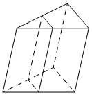

Авторский разбор и аудит предварительны; внешней экспертизы нет.
Модель автора: claude-opus-5-5 (opus; effort=low); в основных частотах: True ·
Впишите правильный ответ.
| Через среднюю линию основания треугольной призмы проведена плоскость, параллельная боковому ребру. Площадь боковой поверхности отсечённой треугольной призмы равна 18. Найдите площадь боковой поверхности исходной призмы. |  |
КЭС: 7.3 Многогранники
36
| ID / вход | Действие | Результат | Локальные KC |
|---|---|---|---|
| s1 · condition | Установить, что отсечённая призма имеет то же боковое ребро, а её перпендикулярное сечение подобно перпендикулярному сечению исходной с коэффициентом 1/2 (секущая плоскость параллельна боковому ребру и проходит через среднюю линию основания, отсекая треугольник, подобный основанию с коэффициентом 1/2) | Периметр перпендикулярного сечения отсечённой призмы равен половине периметра сечения исходной; боковые рёбра равны | kc1 |
| s2 · condition, s1 | Выразить площадь боковой поверхности призмы как произведение периметра перпендикулярного сечения на боковое ребро и сравнить площади | S_исх = 2·S_отс = 2·18 = 36 | kc2 |
[
{
"id": "m1",
"name": "Сравнение боковых поверхностей через коэффициент подобия сечений при общем боковом ребре",
"step_ids": [
"s1",
"s2"
]
}
]Вход: призма и плоскость, параллельная боковому ребру и проходящая через среднюю линию основания. Операция: заключить, что отсечённая призма имеет те же боковые рёбра, а её основание и перпендикулярное сечение подобны исходным с коэффициентом 1/2. Применимо при параллельности плоскости боковому ребру.
{
"local_kc_id": "kc1",
"status": "new_candidate",
"catalog_kc_id": null,
"evidence": [
{
"ref": "step:s1:action",
"quote": "секущая плоскость параллельна боковому ребру и проходит через среднюю линию основания, отсекая треугольник, подобный основанию с коэффициентом 1/2"
},
{
"ref": "step:s1:result",
"quote": "Периметр перпендикулярного сечения отсечённой призмы равен половине периметра сечения исходной; боковые рёбра равны"
},
{
"ref": "image:assets/a0069ff939d947745178be00.png",
"region_description": "Наклонная треугольная призма; внутри штриховыми линиями показана плоскость от средней линии нижнего основания к соответствующему отрезку верхнего основания, параллельная боковым рёбрам"
}
],
"context_refs": [
"condition",
"image:assets/a0069ff939d947745178be00.png"
],
"alternatives_checked": [
{
"catalog_kc_id": "literal_d5e287608dd5",
"reason": "Подобие для пропорции отрезков на плоскости; не охватывает вывод о том, что сечение плоскостью, параллельной ребру, даёт призму с теми же боковыми рёбрами и подобным с k=1/2 перпендикулярным сечением"
},
{
"catalog_kc_id": "literal_0cd75b4548b3",
"reason": "Распознавание призмы по граням — только часть (отсечённое тело является призмой), без подобия сечений"
},
{
"catalog_kc_id": "similar_area",
"reason": "Отношение площадей через квадрат коэффициента; здесь нужно отношение периметров, квадрат не используется"
},
{
"catalog_kc_id": "literal_6f2cb1731d16",
"reason": "Тип сечения по пересечённым рёбрам не описывает свойства отсечённой призмы"
}
],
"rationale": "Операция: из параллельности секущей плоскости боковому ребру и средней линии основания вывести, что отсечённое тело — призма с теми же боковыми рёбрами, а её перпендикулярное сечение подобно исходному с k=1/2 (периметр вдвое меньше). В каталоге нет узла о свойствах призмы, отсечённой плоскостью, параллельной боковому ребру. Средняя линия даёт подобие с k=1/2, переносимое на перпендикулярное сечение параллельным проектированием; это обосновано лишь кратко.",
"proposal": {
"name": "Устанавливать свойства призмы, отсечённой плоскостью, параллельной боковому ребру",
"definition": "Для плоскости, параллельной боковым рёбрам призмы, установить, что отсекаемая часть — призма с теми же боковыми рёбрами, а её основание и перпендикулярное сечение подобны (или связаны) с исходными по коэффициенту, определяемому следом плоскости в основании."
},
"blocking": false,
"issue_ids": []
}Вход: периметр перпендикулярного сечения и длина бокового ребра (или их отношения для двух призм). Операция: площадь боковой поверхности равна их произведению; при равных рёбрах отношение площадей равно отношению периметров. Применимо к любой призме, в том числе наклонной.
{
"local_kc_id": "kc2",
"status": "new_candidate",
"catalog_kc_id": null,
"evidence": [
{
"ref": "step:s2:action",
"quote": "Выразить площадь боковой поверхности призмы как произведение периметра перпендикулярного сечения на боковое ребро и сравнить площади"
},
{
"ref": "step:s2:result",
"quote": "S_исх = 2·S_отс = 2·18 = 36"
}
],
"context_refs": [
"step:s1:result"
],
"alternatives_checked": [
{
"catalog_kc_id": "cylinder_lateral",
"reason": "Формула S=2πrh только для прямого кругового цилиндра"
},
{
"catalog_kc_id": "literal_e97bf0e03da7",
"reason": "Боковая поверхность конуса"
},
{
"catalog_kc_id": "literal_19971b364ca1",
"reason": "Объём призмы, не боковая поверхность"
}
],
"rationale": "Операция: S_бок = P_перп·l для призмы (в т.ч. наклонной) и при равных рёбрах переход к отношению площадей как отношению периметров. Узла для боковой поверхности призмы в каталоге нет. Вычисление 2·18=36 корректно.",
"proposal": {
"name": "Вычислять площадь боковой поверхности призмы через перпендикулярное сечение",
"definition": "Использовать S_бок=P_⊥·l, где P_⊥ — периметр перпендикулярного сечения, l — боковое ребро; для прямой призмы P_⊥ — периметр основания, l — высота. При равных рёбрах отношение площадей равно отношению периметров."
},
"blocking": false,
"issue_ids": []
}[ "По рисунку призма может быть наклонной; использована формула через перпендикулярное сечение, справедливая и для прямой призмы." ]
[]
{
"author_path": "data/annotation/runs/2026-11-09-fipi-team-bogdan108-next-100/raw/author/e3e194.json",
"auditor_path": "data/annotation/runs/2026-11-09-fipi-team-bogdan108-next-100/raw/auditor/e3e194.json",
"accepted_after_review": null
}